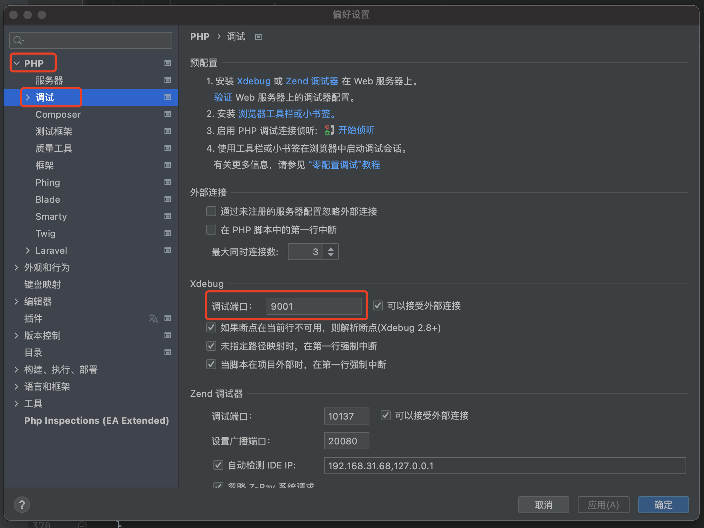
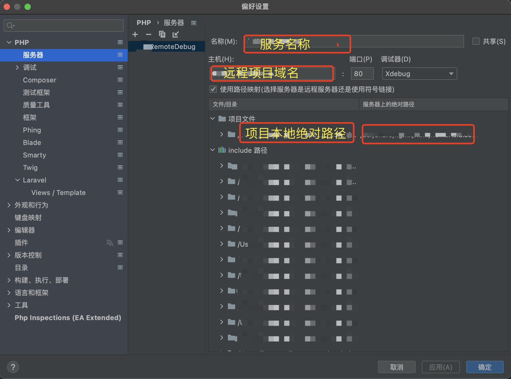
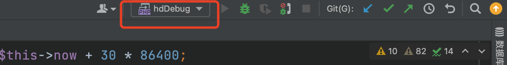
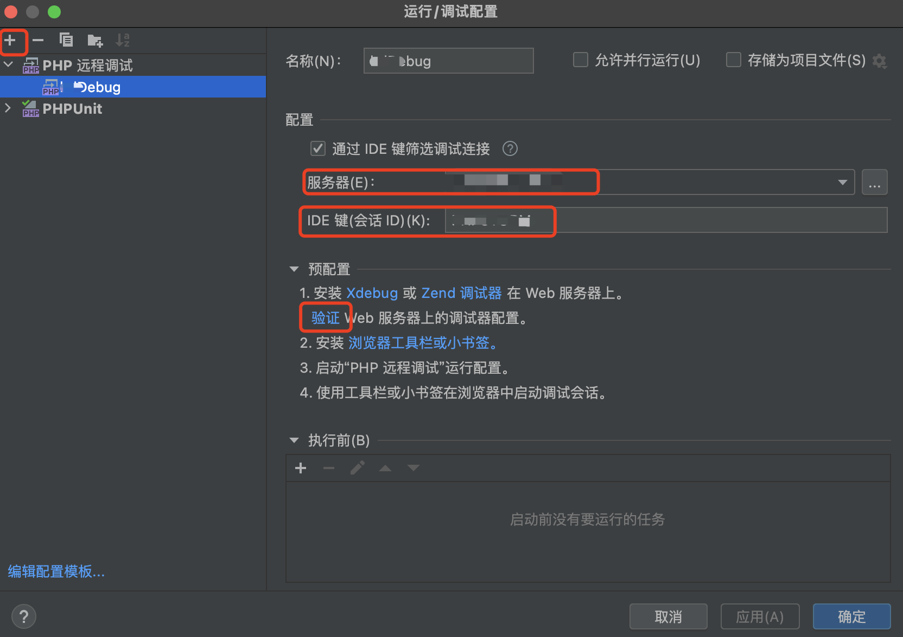

1.背景
在不使用xdebug调试代码时，遇到报错，有时需要在代码内主动打印，来定位问题。这样做效率慢，并且在调试完很容易漏删测试代码。为了提高排查问题效率，使用xdebug来调试代码问题，像idea调试java代码一样。下面介绍一下如何配置xdebug，实现远程调试php代码。
我的环境是使用的docker来部署的代码。在宿主机远程调试docker内的代码。
2.环境
1.代码在docker环境部署
2.框架：laravel
3.php版本：7.4
4.xdebug版本：3.1+
3.安装
需要在本地和docker内先安装php的xdebug拓展，安装方法如下：
本地安装：
pecl install xdebug
安装成功后，会自动配置带php.ini内，pecl在安装php环境的时候，会自动安装，如果没有添加到环境变量，可以去php的安装目录下：
/bin文件夹下查找
docker安装：
1.安装xdebug拓展
pecl install xdebug
2.为php开启xdebug插件
docker-php-ext-enable xdebug
docker下使用pecl安装完拓展，需要使用
docker-php-ext-enable命令开启一下，该命令是docker容器下自带，可直接使用。
4.配置xdebug
docker环境下得php.ini文件是不存在得，他的配置都是根据拓展插件分开存放的，所以docker下配置xdebug的文件只需要在这个文件下配置即可：
/usr/local/etc/php/conf.d/docker-php-ext-xdebug.ini。
配置信息：
xdebug.profiler_enable=on
xdebug.auto_trace=on
xdebug.collect_params=on
xdebug.collect_return=on
xdebug.show_exception_trace = On
xdebug.remote_autostart = Off
xdebug.client_enable = On
// 客户端监听端口（这里需要在phpstorm配置）
xdebug.client_port = 9001
// ide监听使用的标识
xdebug.idekey=PHPSTORM
xdebug.client_log=/tmp/xdebug_remote.log
// 宿主机的地址，为了防止变化
xdebug.client_host=docker.for.mac.localhost
xdebug.mode=debug
这里需要注意，xdebug3.0以上版本，修改了配置key写法，3.0版本将2.0版本的remote_host等key换成了client_host，相对于2.0版本，把remote修改成client即可。 本地环境配置同上，客户端配置，根据实际情况修改即可。
5.phpstorm配置
配置好了xdebug配置后，下面开始配置phpstorm。
5.1 配置debug
打开phpstorm的设置菜单，选择php -> debug(调试)：
将xdebug的调试端口设置成9001（刚才在xdebug配置的客户端端口），配置好后点击apply。

5.2 配置服务器
同样在上图所示的页面内，点击上面的服务器（server）。点击“+”号，添加一个服务器。
输入名称、主机（远程项目域名）、端口，调试器选择：xdebug 。
如果是远程服务器，需要将下面的复选框勾选，并且在项目文件上配置上本地项目和远程项目所在的绝对路径（到项目根目录即可）。点击：apply保存后，点击：确定。

5.3 添加调试配置
配置好上面的内容后，选择ide上面的调试配置，选择：编辑配置，添加远程调试配置。

点击：+，选择：php远程调试，输入名称，服务器选择刚才添加的服务器，IDE键选项填写：PHPSTORM (这里需要与xdebug配置的idekey配置保持一致)。配置好后，点击：确定，即可。下面就可以测试了。

5.4 调试
点击ide最上面像电话一样的按钮，然后点击debug按钮，即可监听debug。
在调试接口的时候，在接口地址后面拼接：XDEBUG_SESSION_START=PHPSTORM参数，phpstorm的debug即可监听到请求，并且会在设置的断点处停止，下面就可以进行debug调试了。
吐槽
网上搜索的一堆，都是在xdebug 2.0版本的配置，没有走通，后来是在启动项目时，检测php环境的xdebug出现了报错，根据报错发现的xdebug的参数修改了。